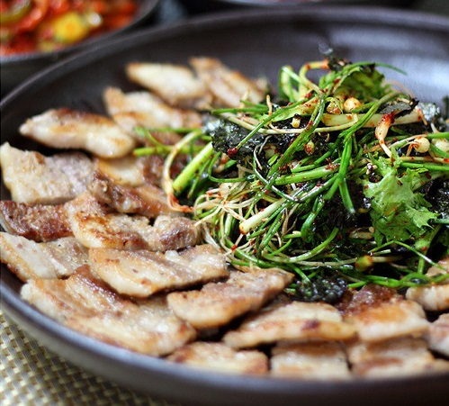
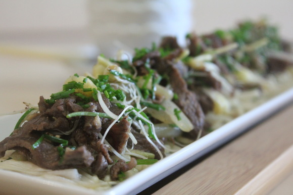
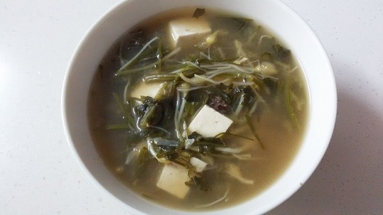

TODAY 28 ｜ TOTAL 234918

달ㄹrl의 미니홈피(●'◡'●)
https://url주소/나중에입력
달래 무침과 삼겹살

삼겹살과 목살 구워 먹을때에 빠지면 섭한 것이 바로 된장찌개와 파무침이죠.
그런데 조금 다르게 파무침을 달래로 대신할 수 있습니다.
달래를 뿌린 불고기

씻어놓은 상추에 달래 불고기를 얹어 먹으면 입 안 가득 알싸하면서도 향긋한 달래향이 참 좋다고 합니다.
달래 된장국

만드는 법은 백종원 레시피 냉이 된장국과 똑같아요. 재료를 달래로만 변경했을 뿐!